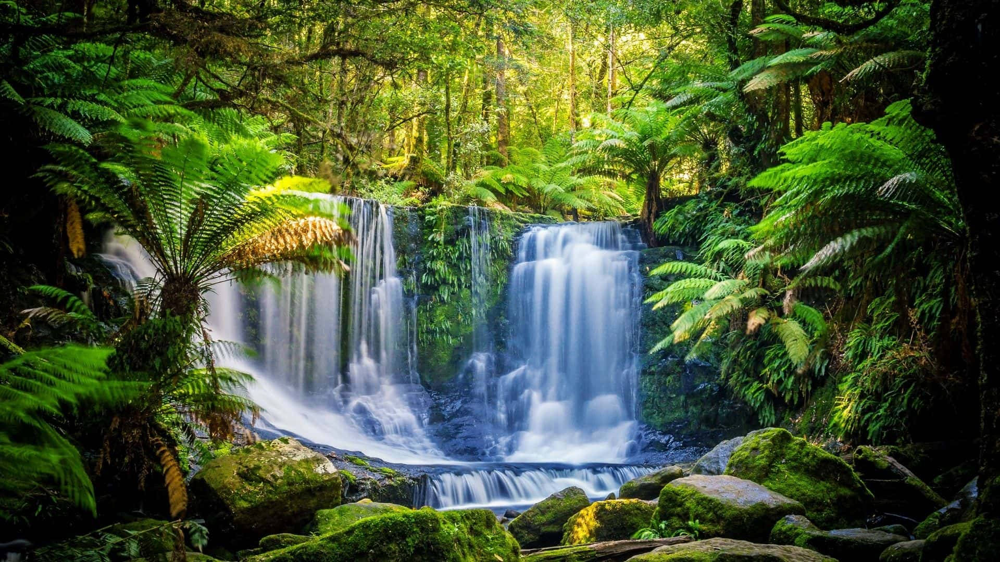
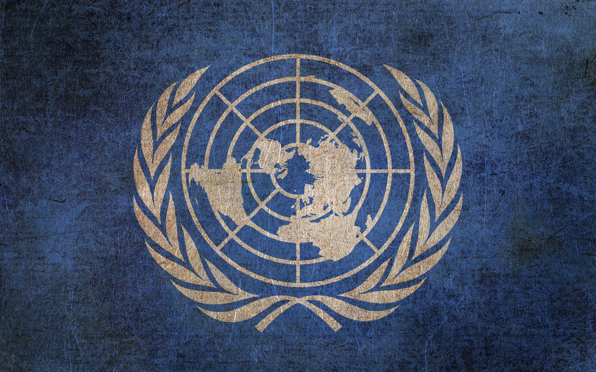
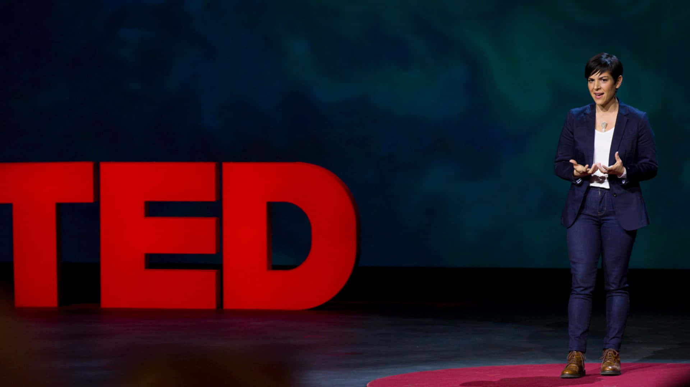
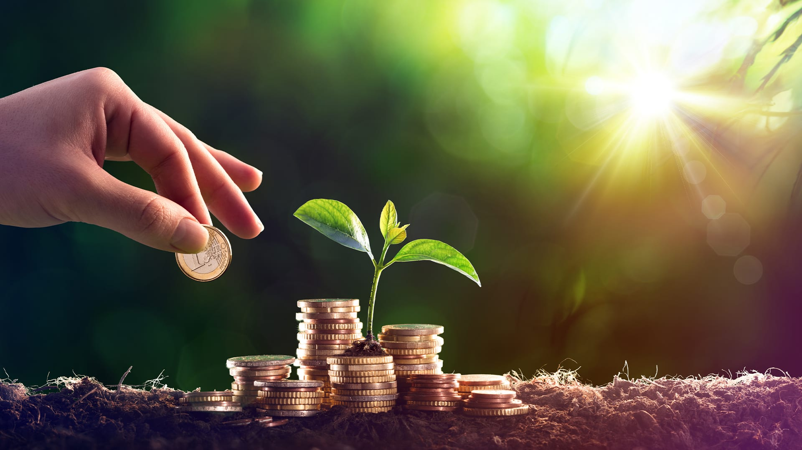

Sustainable Development

Discover the comprehensive framework of the United Nations Sustainable
Development Goals, addressing global challenges and fostering a more
sustainable and equitable world. From eradicating poverty to ensuring
clean water and sanitation, each goal represents a crucial aspect of
our shared commitment to a better future.
Explore UN SDGs

Dive into the latest research papers and publications from reputable
journals and institutions. Stay informed about groundbreaking
discoveries and innovative solutions that contribute to the ongoing
battle against climate change. Knowledge is the foundation of change,
and we strive to bring you the most up-to-date and relevant
information.
Read Latest Research

Visualize the challenges and solutions through our curated collection
of videos and documentaries. From inspiring TED Talks on climate change
to captivating documentaries like "Our Planet" on Netflix,
these resources provide a dynamic and engaging perspective on the
issues we face and the actions being taken to address them.
Watch TED Talks

Explore the work of leading organizations and institutions dedicated to
sustainable development and environmental stewardship. From the
Intergovernmental Panel on Climate Change (IPCC) to the World Resources
Institute (WRI), these entities play a crucial role in shaping policies
and driving positive change on a global scale.
Learn from IPCC
Empower yourself with interactive tools that allow you to explore and
understand complex environmental issues. Climate Interactive provides
simulation models, while Global Forest Watch offers an interactive map
for monitoring the health of our planet's vital forests.
Explore Climate Interactive

Stay abreast of the latest developments in the battle against climate
change with our curated selection of news articles and updates. Climate
Action News and The Guardian's Environment section provide timely
and relevant information to keep you informed and engaged.
Read Climate Action News

Thank you for joining us on this journey toward a more sustainable
future. Together, we can turn knowledge into action and create positive
change for generations to come. Explore, learn, and take part in
shaping a better world.